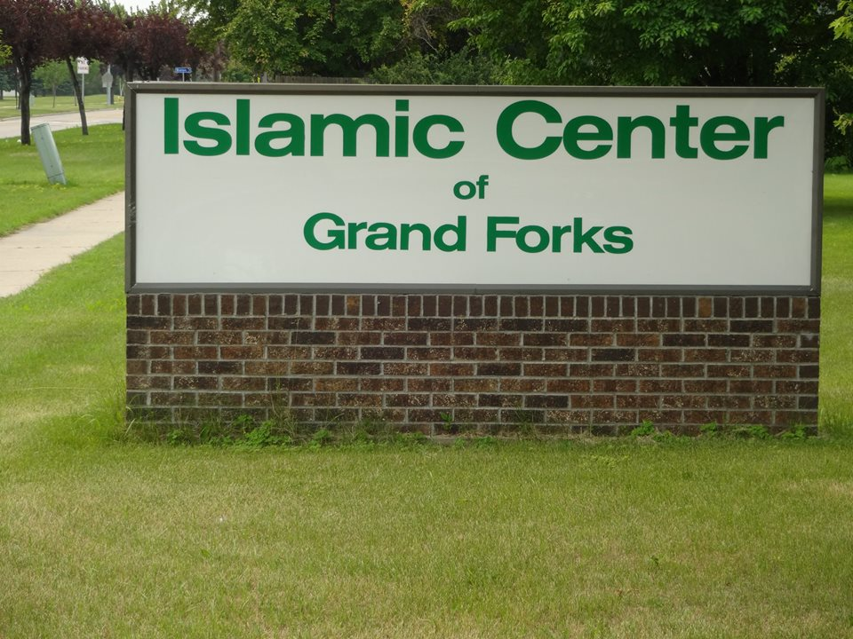

Welcome to Islamic Center of Grand Forks
Islamic Center of Grand Forks is a Masjid located in Grand Forks, ND dedicated to calling to the Qur'aan and the Sunnah, according to the understanding of the Salaf.
ICGF Services
Islamic Society of Grand Forks provide the following services in Grand Forks and the neighboring community.
All of these services are offered for free, and is NOT require fees to cover associated costs.
Please contact us for details if you wish to receive any of the following services:
- Daily five times prayers
- Weekly Friday prayer (Jum'a)
- Yearly Eid prayers (Eid-ul-Fitr and Eid-ul-Adha)
- Taraweeh prayer and Quimul lail (During the the month of Ramadan)
- Islamic Education: Please contact Islamic School (on this website)
- Nikah/ Marriage services: Nikah or “Aqd” according to Islamic Practice
- Muslim Burial/Funeral Services: Janaza and Burial at Islamic Cemetery in Grand Forks, ND
- Understandinng Islam: You are most welcome to observe our services and attend the Friday sermons for better understanding of Islam. Please contact with the Masjid officials.